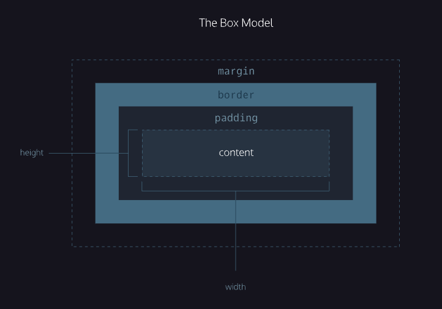
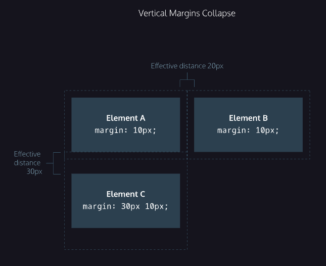

An important concept to understand how elements are positioned and displayed on a website
All elements on a web page are interpreted by the browser as living inside of a box
The box model comprises the set of properties that defines parts of an element that takes up space on a web page
An element's content has two dimensions. Height and width.
Pixels allow you to set the exact size of an element's box.
Border is the line that surrounds an element. Borders can be set to a specific width, style, color
The default is "medium none color"
If any of it is not defined, web browser assigns the default values
You can modify the corners of an element's border box with the broder-radius property
Doing border-radius: 5px -> will set all four courners of the border to a radius of 5 px
The space between the contents of a box and the borders of a box is known as padding
The padding property is often used to expand the background color and make the content look less cramped
To be more speicfic about the amount of padding on each side of the box'x content, you can use these properties
There is a shorthand you can use
Padding shorthand lets you specify all of the padding proeprties as values on a single line
Margin refers to the sapce directly outside of the box
Same as padding, you can specify the side in which you want the margin to be applied on.
The shorthand values apply too.
The margin property lets you center content
margin: 0 auto; This code will center the divs in their containing elements
The 0 sets the top and bottom margins to 0 pixels.
The auto value instructs the browser to adjust the left and right margins until the element is centered within its containing element
For this to work, the width has to be set for that element
Top and bottom margins collapse, while top and bottom padding does not
Horizontal margins, like paddings, are always displayed and added together
Vertical margins do not add. The larger figure out of the two vertical margins will be used
Notice how 30px is the distance between A and C and not 40px
Content can suffer because a web page can be viewed through lots of different screen sizes
CSS offers two proeprties that can limit how narrow or how wide an element's box can be
Same concept with height
When properties are set to low, content can spill outside, but there are ways to work around the issue
Sometimes componenets result in an element that is larger than the parent's area.
The overflow property contorls what happens to content that spills outside its box
The overflow property is set on a paremtn element to instruct a web browser on how to render child elements
If a div's overflow property is set to scroll, all of the children of the div will display overflowing content with a scroll bar
All major web browsers have a default stylesheet they use in absence of an external stylesheet.
They are known as user agent stylesheets. User agent is a technical term for browser.
User agent stylesheets have default CSS rules that set default values for padding, margin
Developers find this annoying so what they do is reset the default values. * { margin : 0, padding : 0 }
Elements can be hidden from view with the visibility property
The visibility porperty can be set to one of the following values:
Visibility: hidden and display: none is different because using display to be none, removes that empty space completely
It needs changing because, the current box model that was taught, the border thickness, paddings are added to the overall dimensions of the box
This results in difficulty to accurately size a box. Thus overtime, make it hard to position and manage contnet
This lesson focuses on avoiding the problem, by learning new techniques
In CSS, the box-sizing property controls the type of box model the browser should use when interpreting a web page.
The default value of this property is content-box. This value is the value that affects the dimensions of content (the problem we were talking about)
Border-box is the value that avoids the dimensional issues that exist in the former box model
In this box model
To use this box model, use the unviersal selector and use the property box-sizing to change the value to border-box
What is the value for the CSS property overflow that will add a scrollbar for the clipped content only when it is necessary
Overflow: auto; The value auto for the property overflow will add a scrollbar only if the content has been clipped